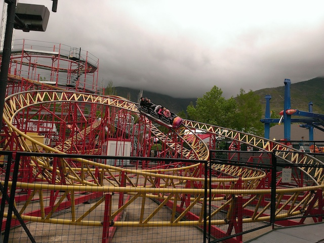
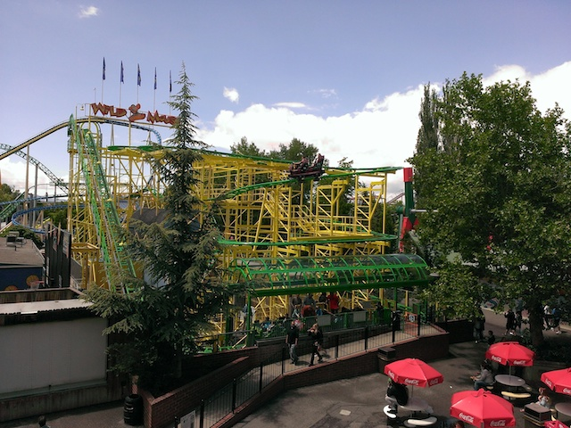
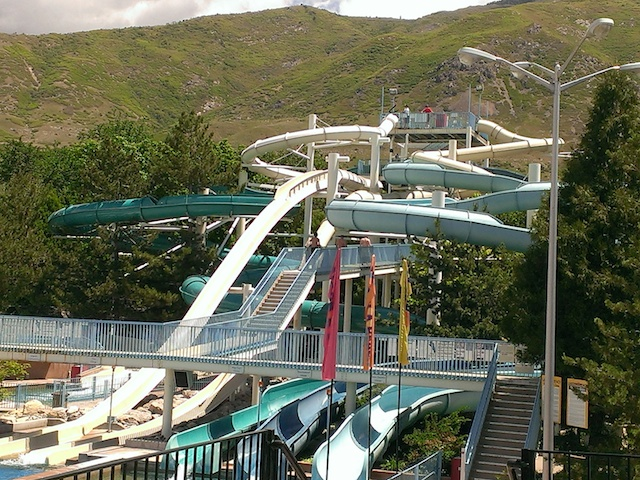

| |
Utah/Colorado Road Trip
Lagoon Colorado
All right. Time for another Incrediblecoasters Mini-Road Trip. This Road Trip is mainly all about returning to one of our favorite parts of the country. Cause yeah. I've been going to Lagoon WAY more often than I was originally planning I would. But hey. That park is f*cking AWESOME!! We didn't spontaneously go there last year for no reason. And considering how much I loved Colorado, we just had to swing on by and go there again. So yeah. Let's get this kickass road trip a going!! =)
Hello there random Carnival. Credit stop anyone? =)
Always enjoy the drive through the Virgin River Gorge every time.
And hey. I'm always down for more Cracker Barrel. I love this sort of Southern Food.
YAY! We made it to Lagoon again!! Wait, what's this?
 Yep. This is actually a camping trip. The entire trip, we spent the whole time sleeping in tents. Hey, I enjoy camping and liked it.
Yep. This is actually a camping trip. The entire trip, we spent the whole time sleeping in tents. Hey, I enjoy camping and liked it.
Come on. Tell me you wouldn't enjoy camping next to a nice Schwarzkoph. =)
 HOLY CRAP!! CANNIBAL LOOKS SO GOOD IN PERSON!!!
HOLY CRAP!! CANNIBAL LOOKS SO GOOD IN PERSON!!!
 Not too worried. I got a Lagoon Season Pass (Hey, the two days of admission I paid for in 2013 was the same price as a Season Pass. It's totally worth it) and I'll be back for Cannibal later this year.
Not too worried. I got a Lagoon Season Pass (Hey, the two days of admission I paid for in 2013 was the same price as a Season Pass. It's totally worth it) and I'll be back for Cannibal later this year.
SON OF A *drool*!!!!
I seriously can't wait to ride this thing in July.
Hey, we may not be able to get on Cannibal right now, but we can still get on Wicked, which is awesome.
 Having more fun in the Lagoon fountain.
Having more fun in the Lagoon fountain.
Aww. Get close you two. =)
Ooh. Artsy shot.
"OH MY GOD!!! SCARIEST RIDE EVER!!!"
Ooh. Lagoon is all pretty and comes to life at night.
Love this park at night. Then again, I just love this park in general.
YAY!!! The river is back!! And it turns out that it's actually a real river that goes right through the park and through the campsite. I like it. =)
What better way to start out the morning than with a ride on Samauri? A Top Scan that runs an AWESOME program? =)
 We need more Schwarzkoph Goodness. Please build more rides like this.
We need more Schwarzkoph Goodness. Please build more rides like this.

Do not underestimate this ride. It will kick your ass!!
 "Finally got on Bombora after it broke down on me last year."
"Finally got on Bombora after it broke down on me last year."
Ooh. Time to check out Pioneer Village and explore some more.
This church is empty. Clearly it must not be a Mormon Church.
Oh god! I spent too much time in the church! I have to go back to school so I can re-learn that the universe was created in the Big Bang, humans evolved, and that this country was founded on the seperation of Church and State.
"Hmm. I never knew that they had Fire Extinguishers back in the 1800s. How authentic."
Never noticed this upstairs portion. Let's see what's up here.
Break the park rules, end up in Pioneer Village Jail. Understand?
 We spent way too much time in here.
We spent way too much time in here.
YOU SHALL NOT PASS!!!
We finally did the parks log flume. While not exactly a great layout, it was still fun and had a nice setting.
Hey waterphobes!! The waterfall on Rattlesnake Rapids is off today!! You won't get soaked now!

You really need to do the Wild Mouse here when you go to Lagoon. It really is one of the strongest and most brutal of its kind.
Hey Indiana Beach! Look what I can do at Lagoon! =P
One of the few bumper cars in America without any bullsh*t you have to put up with nowadays.
All right. Time to check out Spider.
I never knew just how good Spider was until I rode Undertow last month. Thanks for your jerkiness and agressiveness.
I know a lot of people make fun of this sign for thinking "What sort of idiot would sit on a fence like that!?". Knowing the horror stories from my days working in a theme park, I TOTALLY believe that people have been stupid enough to do exactly that.
It's weird. The more I ride Roller Coaster, the better this ride gets.
 I'm dead serious. There was actually some ejector air on the ride today. It was definetly the best it's ever run.
I'm dead serious. There was actually some ejector air on the ride today. It was definetly the best it's ever run.
Quick little thing that Lagoon does differently from other parks. If you lose something like a hat or sunglasses on the coaster, they'll actually stop the ride and go get your stuff for you. I'm actually kind of split on this. On the one hand, it's a really nice gesture and definetly helps make the guests day. On the other hand, it does hold up the line. And maybe I'm just more of an asshole than your average Utahn, but I don't feel much sympathy for those who lose stuff through zippered pockets. I'm a big believer in personal responsibility and if you lose something, you wait till the end of the day and then they do the track walk for hats and crap like that. And it's not like I'm perfect. I have lost a cell phone and a still camera on roller coasters before. They didn't get them back for me, I didn't expect them too, and those things were gone forever. This is partially why I advocate for zippered pockets (Yes. They do work Universal Orlando Resort. Stop being so f*cking insane!). But hey, people don't seem to mind. So good for Lagoon.
Yep. We ate and paid way too much at the Subway here.
WHOA!! This ride is actually getting you wet!! This is a new addition.
You know, since we had so much time at Lagoon, we actually decided to go and check out their water park.
Hey. Seems like a fun little water park.

These drop slides, while not the best, are still really fun. Particuarly the one on the right with indoor action at the top.
Hey! A clone of the Soda Straws from Sclitterbahn. I love that ride and am happy to see clones popping up.
After hearing Cody rave on about the Beaver Tails and how Lagoon is the only park in America to have them, I had to get one.
Dude!! These things are f*cking GOOD!!! We need more Beaver Tails please!! =)
OK. That is by far, the longest I've ever seen the Wicked line. And apparently, we went on one of the busiest days of the year in 2013. Then again, it's Memorial Day Weekend. This isn't that shocking.
Luckily, it was a fast moving line. Cause Lagoon is GREAT with operations.
 Have I mentioned that I love Wicked?
Have I mentioned that I love Wicked?
Oh yeah. We forgot about the Schwarzkoph Looper. Well, here you go!! =)
♫I GET KNOCKED DOWN! BUT I GET UP AGAIN! YOU'RE NEVER GONNA KEEP ME DOWN!♫
 I really hope that these rides are taken care of. Cause they really are just great rides.
I really hope that these rides are taken care of. Cause they really are just great rides.
I have no problem with horrible dipsh*ts getting fined heavily. Serves them right.
I'm not sure why, but the Skyride at Lagoon is just a really great place to relax and enjoy yourself.
"HEY YOU! GET OFF THE F*CKING GRASS BEFORE WE THROW YOUR ASS IN PIONEER VILLAGE JAIL!!!"
 Hey. I'm totally down for another ride on Jet Star 2.
Hey. I'm totally down for another ride on Jet Star 2.
Got a group of three? Too bad!! Start spooning!! Cause no single riders allowed under any circumstances!!
 I know I always joke and say that Bazooka Bowls was the only real helix of death and all others are just strong fake helixes of death. NOT THIS!! This is just as real a helix of death as Bazooka Bowls!!
I know I always joke and say that Bazooka Bowls was the only real helix of death and all others are just strong fake helixes of death. NOT THIS!! This is just as real a helix of death as Bazooka Bowls!!
Hey. I'm happy that these things are becoming a common flat ride.
On the downside, Samauri has an extremely long line. But on the upside, the public knows a good ride when they see one.
For some reason, the S&S Towers seemed much stronger this year than they did back in 2013.
Nothing special, but I enjoy these raft slides. They're becoming a dying breed.
Whoa! There's a Habit! I thought that was only a So-Cal thing!! What the hell is it doing here in Salt Lake City!!? It's trippy enough that there's an In'N'Out here, now there's a Habit too!!? Hey, I don't mind. =)
Colorado
Home
|